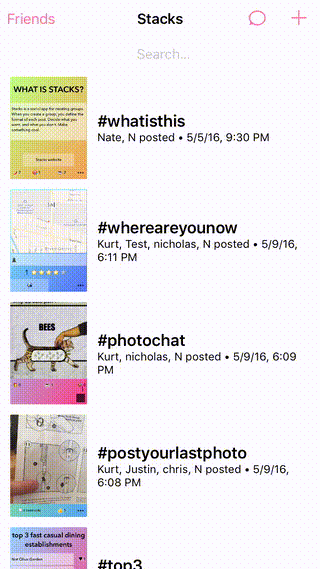

Ideation
With 50% of the world’s population with a mobile subscription, mobile is the most pervasive computer platform. However, development for these platforms is still a long process, taking days, months, or even years to create a product. How can we leverage the mobile computing phenomenon to encourage creation and ideation on a much wider scale, allowing people to create their own social networks? We already see this happening in various Facebook groups, where users enact their own rules surrounding what content is and is not appropriate to post. What if they had the option to further customize the way they collected this information?
System
Inspired by hypercard, as well as drag-and-drop website builders like Weebly, we decided to create a tool that would allow anyone to create or customize their own app through dragging and dropping behaviors into a card. Behaviors are anything that a user can interact with to feed the app data, while cards are simply a defined area on which the behaviors are placed. Cards with similar layouts of behaviors are in the same stack.

We allow users to directly manipulate the behaviors and place them anywhere they want on the screen. They can use gestures that are natural to them, coming from existing UI behaviors in common apps. There are very little restrictions—behaviors can be placed anywhere on a card, they can overlap other behaviors, and some behaviors can even trail off the card itself.
[workflow + wireframes
Create hashtag
Create first card
All following cards follow template]
This workflow allows the user to define the template at the same time as creating the first post in the stack. There’s no unnecessary checklists or forms to fill out before getting directly to the content.
[previous iterations using checklists, clipping onto messenger apps, etc.]